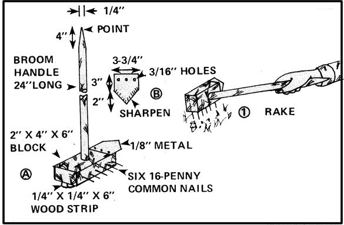

Up here in Oregon, on our Kozy Korner Homestead, we always have a lot of gardening jobs to do. And that's good except for the fact that each and every one of those pleasant tasks seems to require a separate land expensive) store-bought tool for its completion.
What a bother! Who wants to buy all those implements in the first place? And who wants to drag them out every spring, wrestle with them through the summer, and then put them all away again in the fall?
Not I And that's why I've come up with what I think is something better: a single homemade hand tool that does all five of the most common jobs I want to accomplish around my garden. And, as complicated as the design and construction of that five-in-one implement might sound, it was actually quite simple. So simple, in fact, that almost anyone with a rudimentary shop should be able to whip up a copy of my invention in an hour or less.
The heart of the tool-its hole puncher/handle-is nothing more than a two-foot length of sturdy broomstick whittled down to a blunt point on one end. The other end of the handle is then inserted into a snug hole drilled in the center of the 4" X 6" side of a 2" X 4" X 6" block of hardwood and locked there by a No. 8 box nail driven into it from the edge of the chunk of wood. Now you have both a hole puncher/handle and a stake driver mallet!
To add a tamper/furrowing capability to this two-purpose tool is easy: just glue and nail a 1/4" X 1/4" X 6"-long strip of wood right down the center of the "mallet's" top.
Then, if you'd like to do a little raking in your vegetable patch from time to time, clip the heads from six 16-penny nails and-taking care to see that they're equally spaced in a straight line-drive them evenly into one edge of the mallet block.
Finally, to help you with all the small hoeing jobs that you. garden needs every week, you can shape and sharpen a small plate of 1/8"-thick sheet metal into a squat bayonet and affix it to one end of the mallet's head as shown.
And there you have it! A hole puncher/mallet/furrow maker/rake/hoe. A five-in-one tool made for little more than nothing that--once you've used it a summer-you probably wouldn't sell for less than $100 if you thought you couldn't get another. You've just built yourself a genuine Kozy Korner Homestead Garden-Thing!
|
 |
|
|